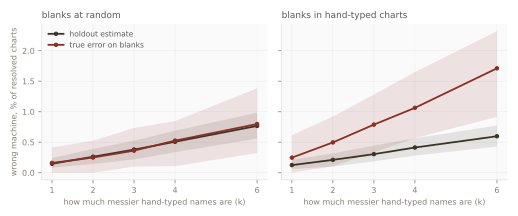
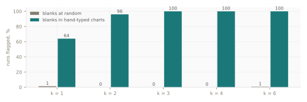

About one SPC chart in six in the system I report from has no machine ID. Most of their names still carry one, so I read the machine from the name, and score that guess on the charts that do have an ID. The score is good. This study asks whether a good score on the charts with an ID says anything about the charts without one.
The real system appears here as ratios only: no machine, product or area code, no count, no file. The experiment runs on a made-up plant built by a fixed-seed generator. Its sizes and error rates are chosen to echo the real ratios, not measured from them.
A chart's machine ID is a field filled in at setup, and about one chart in six has it blank. Chart names are free text, but most of them carry the tool's code, since that is how people tell one chart from its neighbours on a list. So the report reads the last code-shaped token in the name and looks it up.
On charts that have both an ID and a name, the name agrees with the ID all but 0.33% of the time. The report reruns that check on every build. About a quarter of the blank charts name a machine the SPC system has no record of. I left those as an open question rather than map them to the nearest tool: a name that points at nothing is a finding, not a typo to repair.
The same report once guessed a different field, the product, from the chart name. When the real product column appeared, the guess agreed with it on 11.6% of charts, and I retired it that day. The machine guess survived its test and the product guess did not, which is the point of scoring a guess the day a real answer exists. It also raised the question this study answers: the 0.33% was measured on charts that were set up properly. The blanks, by definition, were not.
A made-up plant: five equipment classes of 60 tools each, codes like WB-012,
6,000 charts named like QFN48_WIRE_PULL_WB-012. Four charts in ten are hand-typed; the
rest come from a feed. Every name can go wrong in three ways:
| Name fault | Example | What the guess does |
|---|---|---|
| Token missing | QFN48_WIRE_PULL | No guess. Visible. |
| Digit dropped | …_WB-12 | No such tool, no guess. Visible. |
| Digits swapped | …_WB-021 | If WB-021 exists, a clean guess of the wrong machine. Silent. |
Only the swap onto a real tool, a sister machine one keystroke away, produces a wrong answer that looks right. The other faults leave a chart unresolved, which is honest. Hand-typed names make every fault k times more often than feed names.
Blank IDs are then assigned two ways, one chart in six either way:
• At random. Any chart is equally likely to be blank.
• In hand-typed charts. 35% of hand-typed charts are blank and about 4% of feed charts, so
84% of the blanks are hand-typed against 40% of the plant. This is my guess at how blanks arise:
the charts someone set up by hand are the ones that skipped the feed.
Each of the ten settings runs on 150 fresh plants. The holdout score is the error on known-ID charts; the true error is the same measure on the blanks, which the replica can see and the real system cannot.

| Blanks | k | Holdout says | Blanks really | Ratio | Check fired |
|---|---|---|---|---|---|
| At random | 1 | 0.15% | 0.16% (0.00–0.41) | 1.10 | 2 / 150 |
| At random | 2 | 0.26% | 0.25% (0.00–0.53) | 0.95 | 0 / 150 |
| At random | 3 | 0.38% | 0.36% (0.10–0.73) | 0.95 | 0 / 150 |
| At random | 4 | 0.51% | 0.53% (0.11–0.85) | 1.04 | 0 / 150 |
| At random | 6 | 0.77% | 0.80% (0.32–1.38) | 1.04 | 1 / 150 |
| Hand-typed | 1 | 0.13% | 0.25% (0.00–0.61) | 1.98 | 96 / 150 |
| Hand-typed | 2 | 0.21% | 0.50% (0.11–0.92) | 2.36 | 144 / 150 |
| Hand-typed | 3 | 0.30% | 0.79% (0.33–1.28) | 2.59 | 150 / 150 |
| Hand-typed | 4 | 0.41% | 1.06% (0.57–1.65) | 2.57 | 150 / 150 |
| Hand-typed | 6 | 0.60% | 1.71% (0.92–2.32) | 2.86 | 150 / 150 |
Ranges hold 90% of the 150 runs. Two things in the table matter more than the ratios.
First, the misleading score is also the better-looking one. At k = 3 the hand-typed plant's holdout reads 0.30%, lower than the random plant's 0.38%, because moving the messy charts into the blanks leaves the known charts cleaner. A score that improves when the data gets worse is the one to distrust.
Second, the fault never hides completely. The blanks resolve less often (92% against 97% of known charts at k = 3), and they carry more visibly broken names. The same process that makes silent errors also makes loud ones, and the loud ones can be counted without knowing the answer.
Split the charts by whether the ID is blank. In each group, count the names that are visibly broken: no code token, or a token that names no tool. Test whether the two shares differ (two-proportion z-test, flag at p < 0.01). If the blanks were a random slice, the shares match and the holdout score can stand. If they differ, the blanks came from a different process, and so does their error.

It uses nothing the real system lacks: the chart names and the blank flag. It does not say how wrong the blanks are, only whether the holdout has earned the right to speak for them. When it fires, the honest report is the holdout score with a note that it is a floor.
It cannot say which regime the real plant is in. That is what the check is for. It assumes a swap is the only silent fault; a chart renamed after a tool move would be silent too, and nothing in the name would show it. And it models blanks as a property of how a chart was made. If blanks depend on something the name doesn't carry, such as who set the chart up and when, the check can stay quiet while the score still misleads.
• Score an inferred field on the rows that have the answer. The product guess would have
shipped at 11.6% without it.
• Then compare those rows with the ones you're filling. Any feature you can see in both
groups will do; broken names were enough here.
• Keep inferred values beside the hard count, marked. A reader can drop them. A merged
count can't be taken apart.
• Leave a name that points at nothing as a finding. Mapping it to the nearest tool turns
an open question into a silent error.